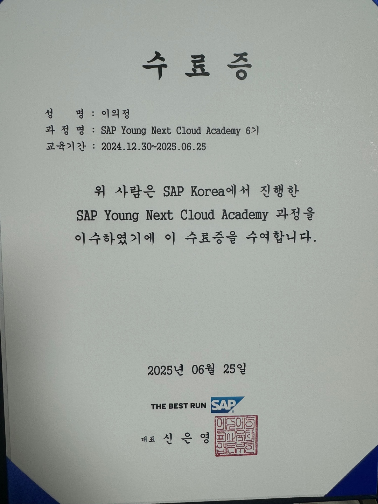
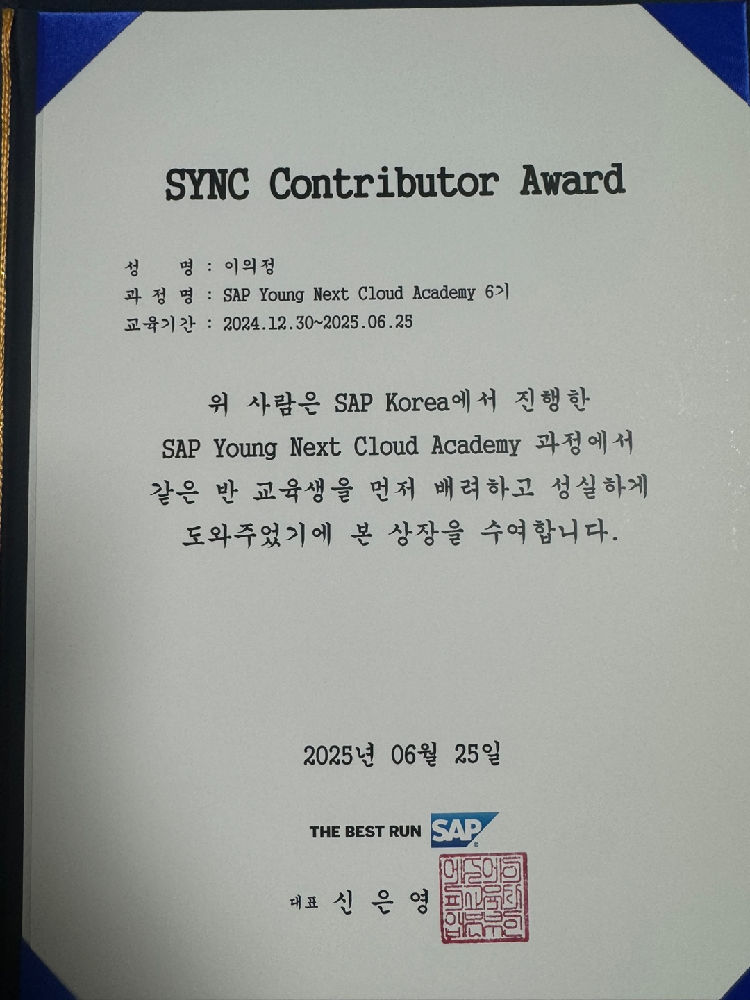
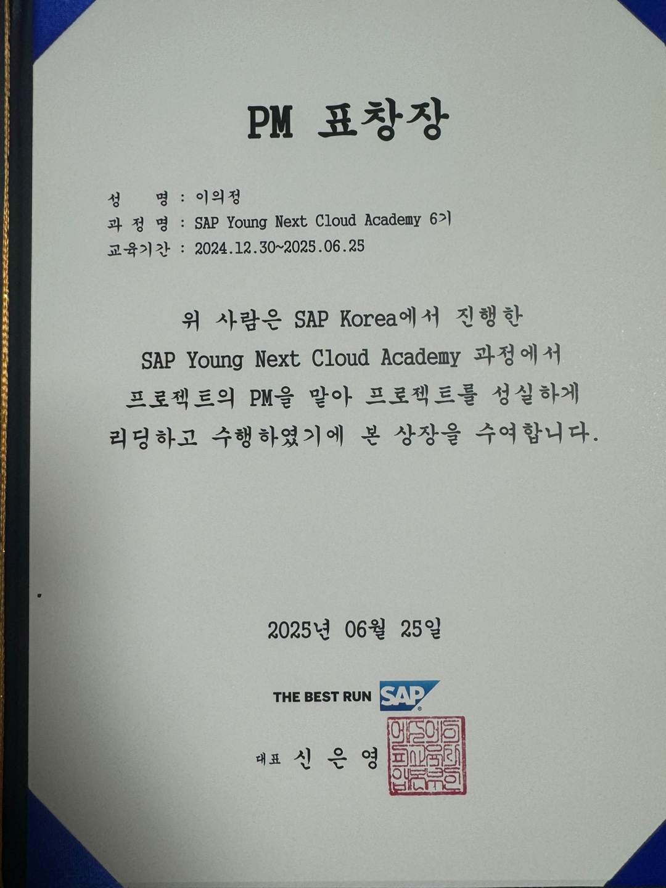

SAP 포트폴리오
이의정 | SAP Consultant & ABAP/UI5 Developer
이의정
아주대학교 산업공학과 졸업 (2013.02 ~ 2020.01)
SAP Consultant & Developer
아주대학교 산업공학과 졸업 (2013.02 ~ 2020.01)
SAP Consultant & Developer
생년월일: 1994.11.10 (만 30세)
성별: 남성
주소: 서울특별시 동작구 사당동
전화: 010-4050-4782
이메일: ghkdyddl1@naver.com
성별: 남성
주소: 서울특별시 동작구 사당동
전화: 010-4050-4782
이메일: ghkdyddl1@naver.com
📌 학력
- 아주대학교 산업공학과 (2013.02 ~ 2020.01) 졸업
📌 경력
더블유마인드룩 - 연구개발전담부서 · 대리
| 2023.10 ~ 2024.10 (1년 1개월)
직무: 앱 개발 / 연구개발전담부서 대리
직무: 앱 개발 / 연구개발전담부서 대리
• 공황장애 디지털 치료제 앱 ‘페닉실린(Panicilin)’ 알파버전 기획 및 개발
(Dart 기반 iOS/Android 동시 구축, JS WebView, PHP, Apache HTTP Server,
MySQL)
• AI 기반 정신질환 진단 시스템 연구 및 프로토타입 개발
(Python, Qwen2.5·Llama3.1, Flask, Firebase)
• 벤처기업 인증 획득 및 연구개발전담부서 설립 주도
• 디지털 치료제 관련 특허 등록 업무 수행
더블유마인드랩 - 개발부서 · 사원
| 2021.08 ~ 2022.05 (10개월)
직무: 웹 개발 / 개발부서 사원
직무: 웹 개발 / 개발부서 사원
• 화상 상담 플랫폼 웹 개발
(React, PHP, Apache HTTP Server, MySQL)
• 정신건강의학과용 온라인 초진 문진 및 척도검사 시스템 개발
(Vue, Firebase)
📌 자격증
- Back-End Developer - ABAP Cloud 인증 - 2025.09
- SQLD (SQL개발자), 한국데이터베이스진흥센터 - 2025.04
- 정보처리기사 필기합격, 한국산업인력공단 - 2025.03
- SAP Fiori Application Developer 인증 - 2023.10
- SQLD (SQL개발자), 한국데이터베이스진흥센터 - 2025.04
- 정보처리기사 필기합격, 한국산업인력공단 - 2025.03
- SAP Fiori Application Developer 인증 - 2023.10
📌 교육이수 및 인턴 내역
SAP Young Next Cloud 교육 수료
| 2024.12 ~ 2025.06
교육기관: SAP
교육기관: SAP
• ABAP, UI5 기반 SAP ERP 시스템 개발 교육
• ABAP 멘토링 강의 진행 (2025.01.13 ~ 02.26)
• UI5 멘토링 강의 진행 (2025.03.04 ~ 03.20)
• CL3 조별 프로젝트 PM 역할 수행 (2025.03.21 ~ 06.17)
• 팀워크·협업 기여로 SYNC Contributor상 수상 (반별 1인)
• PM상, 학생멘토상 수상
KAIST ICT AI 교육과정 수료
| 2024.05.16 ~ 2024.05.31
교육기관: KAIST
교육기관: KAIST
• Machine Learning, Deep Learning, LLM 중심 이론 및 실습
• 최신 AI 기술 흐름 및 적용 사례 중심 단기 집중 교육
아주대학교 금융공학 머신러닝 연구소 인턴
| 2017.03 ~ 2018.01
지도교수: 김하영 교수
지도교수: 김하영 교수
• 금융공학과 머신러닝 연구실 인턴 참여
• 머신러닝 기초 연구 및 실습 프로젝트 수행
📌 SAP SYNC 교육 세부내역
SAP SYNC 교육과정 동안 멘토 역할 및 프로젝트 관리 경험을 요약합니다.
📄 SYNC 활동 내역
• ABAP 멘토링 진행: 실무형 실습문제 기반 교육 & 코드 리뷰 (2025.01 ~ 2025.02)
• UI5 멘토링 진행: JSON 모델, 이벤트, Table 구조 등 실전 강의 (2025.03)
• 프로젝트 리더(PL) → PM 전환: 초기 리딩 후 PM 역할 수행 (2025.03)
• PM 업무: 일정 관리, 역할 분담, 통합 테스트 진행, 산출물 품질 검수 (2025.04 ~ 2025.06)
• 협업 문화 개선: 존댓말 소통·회의 방식 개선으로 팀 신뢰 구축
• SD·PP 모듈: 설계 및 개발 주도
🏅 SYNC 과정 수상 내역
• SYNC Contributor상: 멘토링·학습 분위기 조성 및 협업 기여 (반별 1인)
• PM상: 프로젝트 일정·품질 관리 기여
• 학생멘토상: ABAP·UI5 멘토링 및 학습 지원 공로




🌱 성장 및 다짐
• 늦게 시작한 만큼 기초부터 철저히 준비해왔습니다.
• 빠른 적응과 실무 경험을 통한 성장을 목표로 합니다.
• 겸손히 배우고 팀에 신뢰받는 SAP 전문가가 되겠습니다.
• 고객 관점에서 문제를 함께 해결하는 전문가가 되겠습니다.
📂 프로젝트 산출물 (Full Source & 결과물)
CL3 조별 실전 프로젝트 운영 개요 및 수행 역할, 산출물을 담았습니다.
FoodOnBoram 신석식품 (가상 기업 시나리오)
| 2025.03.21 ~ 2025.06.17
신선육 가공 및 유통 전문 기업
신선육 가공 및 유통 전문 기업
신선육 가공 및 유통을 전문으로 하는 식품 기업 (가상 기업 시나리오)
주요 사업: 닭고기 가공(정형육·부산물) → 가공식품(너겟·패티 등) → 전국 물류센터/프랜차이즈 유통
내가 담당한 역할
| Project PM & Developer
SD·PP 모듈, ABAP & UI5 개발, PM
• PP 모듈: 역 BOM 기반 MRP 및 생산계획 로직 구현, 생산공정 진행 관리 기능 추가
• UI5: MRP 시뮬레이션 차트, 유통기한 임박 자재 전환 프로그램 개발
• SD 모듈: 전체 기본 영업 프로세스(판매계획·오더·납품·청구) 흐름 설계 및 프로그램 개발 지원
• PM 역할: 일정 관리, 협업 체계 개선, 통합 테스트 진행, 산출물 품질 검수
• 성과: 최종 발표 진행, SYNC Contributor·PM상 수상
- 📅 프로젝트 기간: 2025년 3월 21일 ~ 6월 17일
- 🔗 프로젝트 산출물 관리 상세 보기 (네이버 웍스)
- 🔗 최종 프로젝트 포트폴리오 바로가기 (프로그램 소스코드, 구현화면, 상세 PDF 포함)
⚠️ ABAP code는 HTML 형식입니다. 다운로드하여 브라우저에서 열어주세요(미리보기로는 디자인이 제대로 표시되지 않습니다.)
📘 ABAP 멘토링 진행 자료
기초 문법부터 ALV 출력, 내장 함수, 데이터 처리까지 실습형 멘토링 자료입니다.
- 📅 멘토링 기간: 2025년 1월 13일 ~ 2월 26일
- 🔗 ABAP 멘토링 실습문제 바로가기
- 🔗 ABAP 멘토링 해설 및 정답 바로가기
⚠️ 정답 파일은 HTML 형식입니다. 다운로드하여 브라우저에서 열어주세요 (미리보기로는 디자인이 제대로 표시되지 않습니다.).
📙 UI5 멘토링 진행 자료
SAP UI5 기초 개념부터 JSON 모델과 Table 구성까지 단계별 실습과 해설 자료입니다.
- 📅 멘토링 기간: 2025년 3월 04일 ~ 3월 20일
- 🔗 UI5 멘토링 교육자료 바로가기
- 🔗 UI5 실습문제 목록 바로가기
- 🔗 UI5 실습 정답 및 해설 바로가기